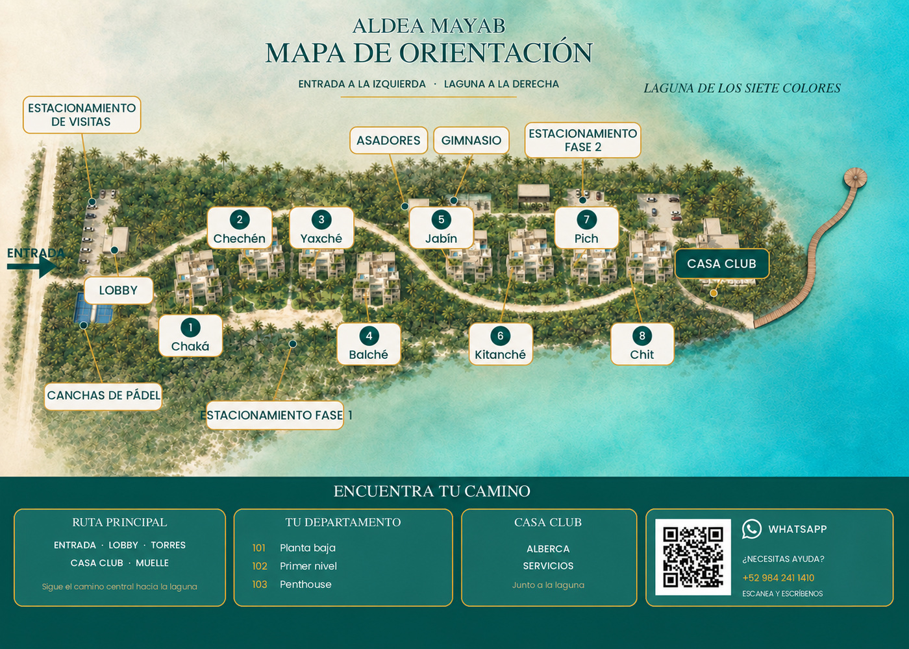

Esta edición integra el gobierno del proceso, los controles documentales y las evidencias necesarias para evaluar el funcionamiento del Libro IV sin presentar como aprobados los datos que aún requieren validación.
LIB-AM-04v13.2
Campo
Definición
Título oficial
Libro IV — Mantenimiento, Infraestructura y Continuidad
Código
LIB-AM-04
Versión
13.2
Fecha de emisión
29 de septiembre de 2026
Propietario documental
Gerencia Administrativa
Responsable técnico
Jefatura de Mantenimiento
Aprobación
Dirección General
Estado
Borrador en validación
Clasificación
Uso interno
Jerarquía de la información
Estado
Significado
Uso permitido
AUTORIZADA
Regla aprobada y vigente.
Puede ejecutarse por el puesto competente.
REFERENCIA
Práctica heredada de la versión 12 que debe contrastarse con el sitio o el fabricante.
Sirve para orientar y capacitar; cualquier desviación se escala.
PENDIENTE
Falta un dato, una autorización o una comprobación.
No habilita la ejecución de la acción.
Historial de cambios
Versión
Fecha
Descripción
12.0
2026
Compilación operativa previa.
13.0
15 de septiembre de 2026
Normalización editorial; código de libro; roles sin nombres; flujos de decisión; límites de intervención; corrección de albercas; mapas técnicos; matriz de liberación.
13.1
15 de septiembre de 2026
Mapa de proceso, organigrama funcional, matriz RACI, flujos de decisión, riesgos, competencia, registros, indicadores y preparación para la transición de ISO 9001.
13.2
29 de septiembre de 2026
Integración controlada del mantenimiento de transformadores subterráneos: inspección externa, límites de intervención, flujograma, materiales condicionados, registro y matriz de validación.
Firmas de aprobación
Función
Nombre y firma
Fecha
Elaboró — Jefatura de Mantenimiento
Revisó — Gerencia Administrativa
Aprobó — Dirección General
00.1 · Inicio
Cómo consultar este libro
El personal debe poder llegar a una respuesta por situación, sin conocer de memoria el número del capítulo.
LIB-AM-04v13.2
Lectura en tres niveles
Nivel
Contenido
Uso
1 — Respuesta rápida
Primera acción, responsable, escalamiento y registro.
Durante el turno.
2 — Procedimiento
Pasos, decisiones, restricciones y criterio de cierre.
Ejecución y capacitación.
3 — Control
Fundamento, registros, indicadores, anexos y cambios.
Supervisión y auditoría.
Índice por situación
Necesidad
Sección
Resultado esperado
Desborde, olor o falla de PTAR
2.1–2.2
Zona contenida, escalamiento y registro.
Sin agua o baja presión
3.1–3.2
Fuente identificada y continuidad controlada.
Corte eléctrico total
4.1–4.4
Riesgo aislado y recuperación documentada.
Pluma o iluminación fuera de servicio
4.5
Control alterno y orden de trabajo.
Alberca fuera de rango
5.1
Cierre preventivo, medición y reapertura autorizada.
Daño en amenidad, vialidad o área común
5.2–7.1
Área segura y mantenimiento programado.
Proveedor o trabajo de riesgo
8.1–9.1
Autorización, permiso y evidencia.
1.1 · 1. Gobierno del proceso
Modelo del proceso y responsabilidades
El modelo define qué recibe el proceso, qué debe entregar, quién decide y cómo se demuestra que una actividad terminó correctamente.
PR-AM-MNT-000v13.2
Caracterización del proceso
Campo
Definición controlada
Propósito
Conservar la infraestructura y recuperar los servicios con seguridad, trazabilidad y criterios de cierre verificables.
Alcance
Mantenimiento preventivo, correctivo y de continuidad de infraestructura, equipos y áreas comunes.
Propietario del proceso
Gerencia Administrativa.
Responsable técnico
Jefatura de Mantenimiento.
Entradas
Programa preventivo, inspecciones, solicitudes, alarmas, lecturas, fallas y requisitos aplicables.
Salidas
Activo disponible o condición controlada, orden cerrada, evidencia y acción de seguimiento.
Usuarios internos
Recepción, Seguridad, Administración, Operación y responsables de amenidades.
Recursos
Personal competente, herramientas, EPP, repuestos, proveedores, manuales, presupuesto y sistemas de registro.
Registros
Órdenes, bitácoras, permisos, mediciones, evidencias, reportes e historial del activo.
Medición
Cumplimiento preventivo, respuesta a fallas críticas, reincidencia, evidencia completa y disponibilidad.
Mapa general del proceso
Ciclo completo de mantenimiento
Detectar o planear
Inspección, solicitud, alarma o tarea preventiva.
↓
Asegurar y registrar
Controlar el riesgo y conservar la condición inicial.
↓
Evaluar y priorizar
Definir impacto, competencia, plazo y recursos.
↓
Autorizar y asignar
Confirmar método, permiso, responsable y proveedor.
↓
Ejecutar
Aplicar la instrucción vigente dentro de los límites autorizados.
↓
Verificar y cerrar
Probar la función, documentar el resultado y definir seguimiento.
↓
Analizar y mejorar
Revisar reincidencias, indicadores, riesgos y cambios necesarios.
El flujo aplica a tareas preventivas, correctivas y respuestas de continuidad.
Organigrama funcional
Dirección GeneralPolítica, riesgo mayor y aprobación.
Gerencia AdministrativaRecursos y continuidad.
Jefatura de MantenimientoMétodo, asignación, supervisión y cierre.
MantenimientoEjecución
LimpiezaConservación
SeguridadControl de zona
ProveedorEspecialidad
Matriz RACI
R ejecuta la actividad. A conserva la autoridad final. C aporta criterio antes de decidir. I recibe la comunicación del resultado.
Actividad
Dirección
Gerencia
Jefatura
Operativo
Seguridad
Proveedor
Aprobar política y liberación del libro
A
R
C
I
I
I
Aprobar recursos conforme a política
I
A/R
C
I
I
I
Definir método y prioridad técnica
I
C
A/R
C
I
C
Contener y registrar una condición
I
I
A
R
C
I
Controlar el acceso al área
I
I
A
C
R
I
Ejecutar trabajo especializado
I
I
A
C
I
R
Verificar y aceptar el cierre
I
I
A/R
C
I
C
Analizar resultados y acciones
I
A
R
C
C
I
Matriz de suplencia
Función titular
Suplencia requerida
Condición de activación
Evidencia
Estado
Jefatura de Mantenimiento
Rol designado por Gerencia
Ausencia, fuera de horario o imposibilidad de contacto
Designación escrita y turno
PENDIENTE
Gerencia Administrativa
Rol designado por Dirección
Ausencia o decisión que no puede esperar
Designación escrita y límites
PENDIENTE
Operador de generador
Segundo operador autorizado
Ausencia del operador primario
Autorización y capacitación
PENDIENTE
Responsable sanitario
Persona competente designada
Desviación de alberca fuera de horario
Designación y competencia
PENDIENTE
1.2 · 1. Gobierno del proceso
Alcance exclusiones y límites de intervención
Define el sistema de mantenimiento de infraestructura, equipos y áreas comunes de Aldea Mayab.
LIB-AM-04v13.2
Respuesta rápida
Cuándo aplica
Cualquier actividad preventiva, correctiva o de continuidad de servicios.
Primera acción
Identificar el activo, el riesgo y la persona responsable antes de intervenir.
Responsable
Jefatura de Mantenimiento; el personal operativo ejecuta únicamente dentro de su competencia.
Escalar si
Existe riesgo para personas, ambiente, continuidad o se requiere autorización no disponible.
Registro de cierre
Orden de trabajo o bitácora con condición inicial, acción, prueba y evidencia.
Objetivo
Conservar la infraestructura y restablecer los servicios de forma segura, trazable y consistente, con responsabilidades claras y evidencia suficiente para supervisión, aprendizaje y auditoría.
Alcance
PTAR y sistemas de tratamiento de agua.
Abastecimiento, filtración, suavización, cisternas y bombeo de agua.
Instalaciones eléctricas, tableros, transformadores, generador, iluminación y automatizaciones.
Conservación física de albercas, Casa Club, gimnasio, pádel, firepit, muelle y áreas comunes.
Vialidad, señalización, residuos, limpieza, áreas verdes, proveedores y órdenes de trabajo.
Exclusiones
Las reglas de acceso y seguridad se controlan en el Libro II.
La atención de emergencias se controla en el Libro III.
Las reglas de uso y reservación de amenidades se controlan en el Libro V.
Los nombres, teléfonos personales y turnos se administran en un directorio operativo independiente.
Límite de autoridad
El puesto, la capacitación y la autorización escrita deben coincidir con la actividad. Conocer la ubicación de un equipo o haber observado una maniobra no habilita a intervenirlo.
1.3 · 1. Gobierno del proceso
Orden de trabajo y criterio de cierre
Toda actividad debe recorrer el mismo ciclo documental: detectar, asegurar, registrar, autorizar, ejecutar, verificar y cerrar.
LIB-AM-04v13.2
Respuesta rápida
Cuándo aplica
Se detecta una condición anormal, una tarea preventiva o una solicitud de servicio.
Primera acción
Asegurar el área y registrar el estado inicial antes de tocar el activo.
Responsable
Quien detecta abre el registro; Jefatura de Mantenimiento clasifica y asigna.
Escalar si
Hay riesgo inmediato, servicio crítico afectado, trabajo especializado o bloqueo mayor al plazo definido.
Registro de cierre
Prueba funcional, evidencia final, costo o consumo, responsable y seguimiento.
Flujo obligatorio
01
Detectar
Identificar el activo, la ubicación y la condición observada.
02
Asegurar
Aislar, señalizar o suspender el uso cuando exista riesgo.
03
Registrar
Crear la orden con hora, descripción y evidencia inicial.
04
Priorizar y autorizar
Definir criticidad, competencia, recursos y permiso aplicable.
05
Ejecutar
Aplicar la instrucción vigente o coordinar al proveedor autorizado.
06
Verificar
Probar la función y confirmar que el riesgo fue eliminado.
07
Cerrar
Adjuntar evidencia, costo, garantía, responsable y fecha de seguimiento.
Matriz de prioridad
Nivel
Criterio
Respuesta
Crítica
Riesgo a personas o ambiente; pérdida de agua, energía, PTAR o acceso.
Contención inmediata y escalamiento simultáneo.
Alta
Amenidad o servicio importante fuera de operación sin riesgo inmediato.
Control temporal y plan de atención en el turno.
Media
Deterioro que no compromete seguridad ni continuidad.
Programar responsable y fecha.
Preventiva
Actividad calendarizada para evitar una falla.
Ejecutar conforme al plan y al fabricante.
Evidencia mínima
Momento
Evidencia
Propósito
Antes
Condición inicial, ubicación y hora.
Demostrar qué se encontró.
Durante
Trabajo realizado, piezas o mediciones relevantes.
Trazar la intervención.
Después
Resultado y prueba funcional.
Sustentar el cierre.
2.1 · 2. PTAR
Inspección de la PTAR
Control visual y documental de las fases de tratamiento, sin sustituir la operación técnica del proveedor ni los permisos ambientales aplicables.
PR-AM-MNT-002v13.2
Respuesta rápida
Cuándo aplica
Al inicio del turno y ante olor, alarma, derrame, fuga o cambio visible.
Primera acción
Restringir el acceso si hay derrame, humedad eléctrica, gas u olor intenso.
Responsable
Personal de Mantenimiento capacitado; valida la Jefatura de Mantenimiento.
Escalar si
Hay desborde, agua negra, olor intenso, falla de aireación o riesgo hacia el suelo o la laguna.
Registro de cierre
Bitácora PTAR con hora, fase, condición, fotografía, acción y responsable.
Secuencia de inspección
01
Colocarse el EPP definido por el análisis de riesgo y revisar que sea utilizable.
02
Observar desde una posición segura niveles, color, espuma, olor, fugas, ruido, alarmas y operación visible de los equipos.
03
Comparar con la condición normal documentada del sistema; no usar descripciones subjetivas sin evidencia.
04
Clasificar el hallazgo como normal, alerta o crítico.
05
Registrar la condición antes de cualquier ajuste permitido.
06
Escalar y coordinar al proveedor cuando la acción exceda la instrucción escrita o la competencia del personal.
Decisión
Condición
Clasificación
Acción
Sin derrame, sin alarma y condición comparable con el historial
Normal
Registrar y continuar monitoreo.
Espuma, olor o nivel distinto sin descarga visible
Alerta
Aumentar vigilancia, notificar y solicitar evaluación técnica.
Desborde, descarga no controlada, agua negra, falla eléctrica húmeda o riesgo ambiental
Crítica
Aislar, contener sólo si es seguro, escalar de inmediato y activar el plan ambiental.
Mapa de referencia

CISPT
CISCisternas y tratamiento
PTPTAR
MP-AM-MNT-001 · Referencia general de agua y PTAR. Verificar físicamente antes de aprobación.
2.2 · 2. PTAR
Respuesta ante anomalías de la PTAR
El objetivo es proteger a las personas y al entorno, y conservar evidencia suficiente para la decisión técnica.
PR-AM-MNT-002v13.2
Respuesta rápida
Cuándo aplica
La inspección o una queja indica que la PTAR no opera como de costumbre.
Primera acción
Aislar el área y detener toda acción que pueda agravar un derrame o riesgo eléctrico.
Responsable
Jefatura de Mantenimiento coordina; Gerencia activa recursos y comunicación.
Escalar si
Existe descarga, riesgo hacia la laguna, exposición de personas o no se contiene la condición.
Registro de cierre
Cronología, fotos, volumen estimado si es seguro, medidas de contención y cierre técnico.
Información mínima para escalar
Ubicación y fase afectada.
Hora de detección y evolución conocida.
Señal observada: olor, espuma, nivel, alarma, derrame o color.
Riesgo para personas, suelo o laguna.
Acción de contención ya aplicada y recursos requeridos.
Secuencia de respuesta
Decisión ante una anomalía de la PTAR
Detectar la anomalía
Registrar hora, fase y señal observable.
↓
¿Hay desborde, descarga o riesgo para personas o laguna?
Evaluar sin entrar a cámaras ni tocar equipos mojados.
↓
SÍAislar y activar respuesta ambiental
Restringir el área y escalar de inmediato.
NOMantener control y reunir evidencia
Comparar con la condición normal documentada.
↓
¿Existe instrucción vigente y personal competente?
Comprobar procedimiento, EPP y autorización.
↓
SÍAplicar la acción autorizada
Monitorear el resultado y conservar mediciones.
NONo manipular y solicitar especialista
Mantener la condición contenida hasta recibir soporte.
↓
Cerrar o mantener escalado
El cierre exige confirmación técnica, evidencia y seguimiento.
3.1 · 3. Agua
Sistema de abastecimiento y tratamiento de agua
El sistema debe leerse como una cadena; una falla aguas arriba puede aparecer como baja presión o cambio de dureza en las torres.
PR-AM-MNT-003v13.2
Respuesta rápida
Cuándo aplica
Hay baja presión, falta de agua, cambio de dureza, alarma de nivel o rutina de lectura.
Primera acción
Confirmar el punto afectado y fotografiar los indicadores sin cambiar ajustes.
Responsable
Personal de Mantenimiento; valida Jefatura de Mantenimiento.
Escalar si
Una bomba se detiene, el nivel cae de forma atípica, no existe diferencia entre agua cruda y tratada o hay fuga.
Registro de cierre
Lecturas, tendencia, acción, prueba de recuperación y consumo.
Cadena del sistema
01
Cisterna de agua cruda
Reserva de entrada; registrar nivel en unidad definida.
02
Bomba de impulsión
Envía agua al tren de tratamiento.
03
Filtro de sedimentos
Retiene sólidos; el ciclo debe seguir el manual del equipo.
04
Carbón activado
Controla compuestos que afectan olor y sabor.
05
Suavizador
Reduce dureza; sólo este componente utiliza sal de regeneración.
06
Cisterna de agua tratada
Reserva de salida antes de presurización.
07
Bombas presurizadoras
Distribuyen agua hacia las torres.
Referencias del sitio
Dato
Referencia heredada
Estado
Capacidad nominal de cisterna tratada
210,000 L
REFERENCIA — validar placa, aforo o plano.
Alerta interna de nivel
180,000 L
REFERENCIA — validar contra consumo y autonomía.
Dureza observada
Aproximadamente 800 ppm
REFERENCIA — validar método, unidad y serie histórica.
Orden físico de tanques
Suavizador / carbón / sedimentos al mirar de frente
REFERENCIA — rotular físicamente.
Mapa de referencia
CISPT
CISCisternas y tratamiento
PTPTAR
MP-AM-MNT-001 · Referencia general de agua y PTAR. Verificar físicamente antes de aprobación.
3.2 · 3. Agua
Lecturas, prueba de dureza y contingencia
Las decisiones deben basarse en tendencias comparables, no en una lectura aislada ni en un valor supuesto.
PR-AM-MNT-003 / IT-AM-MNT-001v13.2
Respuesta rápida
Cuándo aplica
Rutina de turno, baja presión o desviación del tratamiento.
Primera acción
Leer sin modificar ajustes y comparar con el registro anterior.
Responsable
Personal capacitado en el equipo de medición.
Escalar si
La tendencia cambia, no hay diferencia entre agua cruda y tratada, cae el nivel o falla una bomba.
Registro de cierre
Hora, punto de muestra, método, resultado, foto y acción.
Parámetros mínimos
Parámetro
Cómo registrar
Qué dispara revisión
Nivel de ambas cisternas
Unidad única y punto de lectura identificado.
Descenso anormal o imposibilidad de recuperar nivel.
Estado de bombas
Operando / detenida / alarma; identificar número.
Una bomba detenida, ruido, fuga o sobrecalentamiento.
Dureza
Mismo punto de muestra, mismo kit y mismo método.
Cambio sostenido o resultado similar al agua cruda.
Nivel de sal
Porcentaje o altura con referencia física.
Umbral aprobado de reposición.
Consumo
Lectura de medidor y periodo.
Variación no explicada por ocupación u operación.
Prueba de dureza
01
Confirmar que el kit, reactivos, unidad y fecha de caducidad correspondan al instructivo vigente.
02
Identificar el punto de muestra de agua tratada y purgarlo conforme al instructivo.
03
Ejecutar la secuencia indicada por el fabricante; no intercambiar reactivos ni factores de conversión.
04
Registrar el resultado, el número de lote o kit, el punto de muestra y la hora.
05
Comparar con el agua cruda y con la serie histórica del mismo método.
06
Si existe desviación, no modificar el sistema por ensayo y error; escalar para diagnóstico.
Contingencia por falta de agua
Decisión ante falta de agua o baja presión
Confirmar el reporte
Definir unidad, torre, horario e impacto.
↓
¿La afectación es local?
Comparar puntos representativos sin abrir equipos.
↓
SÍRevisar el punto y la torre
Buscar fuga visible, válvula identificada o incidencia local.
NORevisar el sistema general
Consultar niveles, energía, bombas y alarmas visibles.
↓
¿Existe una acción aprobada y segura?
Confirmar competencia e instructivo antes de ajustar.
↓
SÍRestablecer y comprobar
Verificar presión en puntos representativos.
NOAplicar contingencia y escalar
Informar autonomía, impacto y recursos requeridos.
↓
Registrar el cierre
Documentar causa, duración, consumo y seguimiento.
4.1 · 4. Continuidad
Ubicaciones eléctricas y límites de intervención
El mapa permite llegar al activo correcto; no autoriza a abrir, probar, rearmar ni intervenir una instalación eléctrica.
PR-AM-MNT-004v13.2
Respuesta rápida
Cuándo aplica
Hay pérdida de energía, alarma, olor, humo, calor, humedad o un tablero disparado.
Primera acción
Aislar la zona y tratar la instalación como energizada.
Responsable
Personal autorizado por escrito; el resto del personal sólo observa, reporta y restringe el acceso.
Escalar si
Hay humo, olor, calor, humedad, cables expuestos, arco, lesión o falla repetida.
Registro de cierre
Ubicación, hora, señales observadas, personas notificadas y resultado de la intervención autorizada.
Mapa técnico confirmado
T1T2T3T4T5T6T7T8TR1TR2TR3
T1Tablero Torre 1
T2Tablero Torre 2
T3Tablero Torre 3
T4Tablero Torre 4
T5Tablero Torre 5
T6Tablero Torre 6
T7Tablero Torre 7
T8Tablero Torre 8
TR1Transformador Chechén
TR2Transformador camino posterior
TR3Transformador entrada estacionamiento Fase 1
MP-AM-MNT-002 · Ubicaciones de referencia confirmadas. El mapa no autoriza intervención.
Activo
Ubicación confirmada
Acción del personal general
Tableros T1–T8
Detrás de las escaleras de cada edificio.
Identificar torre, aislar y reportar.
TR1
Camino peatonal de Chechén; subterráneo.
No intervenir ni excavar.
TR2
Junto al camino posterior de los edificios; subterráneo.
No intervenir ni excavar.
TR3
Cerca de la entrada del estacionamiento de Fase 1; subterráneo.
No intervenir ni excavar.
Decisión inicial
Señal
Acción
Humo, olor a quemado, chispa, calor o cable expuesto
Alejar personas, no tocar, llamar a emergencias si procede y escalar a personal eléctrico autorizado.
Humedad o derrame cerca de equipo eléctrico
No acercarse ni operar; delimitar y escalar.
Disyuntor disparado
No rearmar por rutina. Personal autorizado debe identificar la causa y aplicar el procedimiento escrito.
Falla sin señal visible de peligro
Determinar alcance desde una zona segura y activar PR-AM-MNT-004.
4.2 · 4. Continuidad
Inspección y mantenimiento de transformadores subterráneos
Esta sección convierte el documento técnico recibido en una guía controlada para TR1–TR3. La información orienta la inspección y la contratación especializada; no autoriza maniobras de media tensión.
IT-AM-MNT-004v13.2
Respuesta rápida
Cuándo aplica
Inspección exterior programada, agua en registro, olor, ruido, calor, fuga, daño visible o mantenimiento especializado.
Primera acción
Restringir el acceso, no abrir ni ingresar y tratar el equipo como energizado.
Responsable
El personal general observa y reporta; sólo personal eléctrico autorizado y un especialista competente pueden intervenir.
Escalar si
Hay humo, arco, carbonización, daño de aislamiento, fuga de aceite, deformación, calor severo, agua en contacto o ausencia de libranza segura.
Registro de cierre
ID del transformador, ubicación, condición inicial y final, agua, fotografías, pruebas, valores, repuestos y aceptación técnica.
Niveles de intervención
Nivel
Alcance permitido
Límite
Personal general
Observar desde zona segura, delimitar, reportar y registrar.
No abrir registros, no ingresar, no tocar, no bombear agua y no efectuar maniobras.
Mantenimiento autorizado
Coordinar el área, verificar documentos, acompañar al especialista y cerrar el registro.
No intervenir media tensión fuera del alcance escrito, la competencia y el permiso.
Especialista eléctrico autorizado
Ejecutar libranza, ausencia de tensión, puesta a tierra, inspección, pruebas y reparación conforme al plan.
Debe usar procedimiento, equipo, repuestos y criterios de aceptación aprobados.
Inspección exterior sin intervención
Punto
Revisar desde condición segura
Registrar
Identificación
Marcador TR1, TR2 o TR3, señalización y acceso restringido.
Ubicación, fotografía y legibilidad.
Registro o bóveda
Tapa, hundimiento, agua, lodo, drenaje, corrosión, fauna, basura y daño del entorno.
Agua sí/no, nivel estimado sin ingresar y condición de la tapa.
Permiso, libranza, bloqueo, ausencia de tensión, tierras, atmósfera, EPP y autorizaciones.
Trabajo
Limpieza, torque, herramienta y calibración, pruebas, resultados, repuestos y residuos.
Cierre
Condición final, prueba de aceptación, restricciones, pendientes, aprobador y próxima revisión.
Frecuencia
La frecuencia se definirá por criticidad, ambiente, historial, agua, contaminación, corrosión y recomendación del fabricante. El documento de referencia no establece por sí mismo una periodicidad autorizada para Aldea Mayab.
4.3 · 4. Continuidad
Falla eléctrica total y generador
La ficha prioriza seguridad, comunicación y continuidad. La operación del generador queda bloqueada hasta completar los datos del equipo y de las personas autorizadas.
PR-AM-MNT-004v13.2
Respuesta rápida
Cuándo aplica
La pérdida de energía afecta todo el residencial o varios edificios.
Primera acción
Descartar señales de peligro desde una zona segura y avisar a Jefatura de Mantenimiento.
Responsable
Jefatura coordina; sólo personal autorizado por escrito opera el generador o tableros.
Escalar si
Hay riesgo eléctrico, servicio crítico sin respaldo, autonomía insuficiente o la falla no se recupera.
Registro de cierre
Hora de inicio, alcance, comunicación, cargas afectadas, restablecimiento y verificación posterior.
Decisión ante una falla eléctrica total
Confirmar el alcance
Registrar hora y zonas afectadas sin abrir equipos.
↓
¿Hay humo, olor, calor, humedad o cables expuestos?
Tratar toda instalación como energizada.
↓
SÍAislar y activar emergencia
Alejar personas y solicitar personal eléctrico autorizado.
NOConfirmar suministro externo
Consultar la condición del servicio y comunicar el evento.
↓
¿Hay operador e instructivo de generador autorizados?
Comprobar autorización escrita, equipo y transferencia.
↓
SÍAplicar contingencia aprobada
Energizar sólo las cargas definidas y monitorear.
NONo operar el generador
Mantener comunicación y continuidad sin improvisar maniobras.
↓
Verificar la recuperación
Revisar agua, PTAR, accesos, CCTV, iluminación y automatizaciones.
Datos que bloquean la operación del generador
Dato requerido
Estado
Ubicación exacta y ruta segura
PENDIENTE
Marca, modelo, capacidad, combustible y autonomía medida
PENDIENTE
Diagrama y método de transferencia de cargas
PENDIENTE
Lista firmada de operadores autorizados y capacitados
PENDIENTE
Instructivo del fabricante y mantenimiento vigente
PENDIENTE
Proveedor primario y alterno de combustible/servicio
PENDIENTE
4.4 · 4. Continuidad
Verificación posterior al restablecimiento eléctrico
El regreso de la energía no equivale a la recuperación de la operación; deben comprobarse los sistemas dependientes.
PR-AM-MNT-004v13.2
Respuesta rápida
Cuándo aplica
Regresa el suministro después de un corte o transferencia.
Primera acción
Confirmar que no existan señales de falla y mantener aislado cualquier activo anormal.
Responsable
Jefatura de Mantenimiento coordina la verificación por responsables.
Escalar si
Un sistema no reinicia, aparece una alarma o existe comportamiento anormal.
Registro de cierre
Lista de sistemas, estado, ajuste autorizado, prueba, hora y responsable.
Secuencia de recuperación
Orden
Sistema
Verificación
1
Tableros y protecciones
Sin calor, olor, humedad, disparos o alarma.
2
PTAR
Operación visible, sin desborde ni alarma.
3
Agua
Bombas, presión, niveles y controladores.
4
Albercas
Circulación, filtración y temporización.
5
Acceso y seguridad
Pluma, intercomunicación, CCTV y registro.
6
Iluminación de emergencia
Modo normal y carga de respaldo.
7
Generador
Paro y condición final sólo por personal autorizado.
Criterio de cierre
Todos los sistemas críticos tienen estado conocido y evidencia.
Las alarmas o fallas residuales tienen responsable y control temporal.
Se documentaron inicio, restauración, duración y causa conocida.
Gerencia recibió el resumen de impacto y pendientes.
4.5 · 4. Continuidad
Pluma vehicular e iluminación crítica
Este procedimiento cubre el estado técnico; la autorización de acceso continúa en el Libro II.
PR-AM-MNT-005v13.2
Respuesta rápida
Cuándo aplica
La pluma no responde, fue golpeada o una zona crítica queda sin iluminación.
Primera acción
Señalizar, aplicar el control alterno aprobado y evitar abrir motores o gabinetes.
Responsable
Seguridad controla el acceso; Mantenimiento diagnostica; proveedor interviene cuando corresponde.
Escalar si
Existe riesgo de atrapamiento, cableado expuesto, pérdida total de acceso o zona oscura con riesgo.
Registro de cierre
Prueba, falla, control alterno, orden de trabajo y restablecimiento.
Pluma vehicular
Verificar visualmente brazo, fijaciones, sensores, botonera y respuesta sin desmontar cubiertas.
Ante impacto, ruido o movimiento irregular, suspender la operación automática y solicitar revisión técnica.
Utilizar el control manual de acceso definido en el Libro II mientras dure la falla.
No ajustar motor, resorte, leva, sensores o cableado sin autorización y manual técnico.
Iluminación crítica
Prioridad
Zonas
Control
1
Escaleras, pasillos, caseta y rutas de salida.
Control inmediato; delimitar si queda una zona insegura.
2
Acceso, estacionamiento, albercas y muelle.
Restablecer o implementar iluminación temporal segura.
3
Pádel y otras amenidades.
Cerrar el área si la iluminación no permite uso seguro.
4
Decorativa.
Programar sin comprometer cargas críticas.
5.1 · 5. Amenidades
Control sanitario y mantenimiento de albercas
La apertura depende de condiciones sanitarias verificables, circulación, claridad y registro; no de una autorización informal aislada.
PR-AM-MNT-006v13.2
Respuesta rápida
Cuándo aplica
Antes de abrir, cada cuatro horas durante operación y ante lluvia, queja o turbiedad.
Primera acción
Cerrar o mantener cerrada la alberca cuando no pueda demostrarse una condición sanitaria segura.
Responsable
Personal capacitado mide; Jefatura de Mantenimiento valida correcciones y reapertura.
Escalar si
La lectura está fuera de límite, el fondo no es visible, no hay circulación o existe contaminación.
Registro de cierre
Hora, punto de muestra, pH, desinfectante, claridad, acción, reapertura y responsable.
Parámetros de control
Parámetro
Límite NOM-245-SSA1-2010
Meta interna propuesta
Estado
pH
6.5–8.5; cada 4 h durante operación
7.2–7.6
Meta interna pendiente de aprobación.
Cloro residual libre
1.0–5.0 mg/L; cada 4 h durante operación
1.0–3.0 mg/L
Meta interna pendiente de aprobación.
Turbidez
5 UTN o penetración de luz mayor a 2 m; diaria
Fondo visible y agua clara
Aplicar el criterio más protector.
Circulación y filtración
Debe operar durante el servicio
Operación confirmada
AUTORIZADA como verificación.
Flujograma de decisión
Decisión para apertura o cierre de alberca
Medir e inspeccionar
Registrar pH, cloro, claridad, circulación, hora y punto.
↓
¿Cumple límites, claridad y circulación?
Usar el método y la frecuencia controlados.
↓
SÍMantener abierta y registrar
Continuar el programa de medición.
NOCerrar y señalizar
Impedir el acceso mientras se evalúa la desviación.
↓
¿La corrección está escrita y autorizada?
Confirmar volumen, producto, etiqueta, HDS y competencia.
↓
SÍCorregir y volver a medir
Conservar dosis, hora, responsable y resultado.
NOEscalar al responsable sanitario
No dosificar por estimación ni reabrir.
↓
Reabrir sólo con evidencia conforme
Registrar la autorización y el resultado final.
Rutina de control
01
Restringir el acceso durante limpieza y medición.
02
Retirar materia flotante y comprobar circulación, filtración, superficies y claridad.
03
Tomar la muestra en el punto definido, con kit vigente y conforme a su instructivo.
04
Registrar pH, cloro residual libre, claridad, hora, persona y evidencia.
05
Si el resultado está fuera de límite o existe contaminación, mantener cerrada la alberca.
06
Aplicar únicamente una dosificación calculada para el volumen real, el producto y su etiqueta/HDS.
07
Volver a medir y documentar antes de autorizar la reapertura.
5.2 · 5. Amenidades
Conservación física de amenidades
Agrupa los criterios comunes para retirar de servicio un espacio o equipo y coordinar su reparación.
PR-AM-MNT-007v13.2
Respuesta rápida
Cuándo aplica
Se detecta daño en pádel, gimnasio, Casa Club, firepit o muelle.
Primera acción
Suspender el uso cuando exista riesgo y colocar señalización inequívoca.
Existe riesgo estructural, de caída, incendio, vidrio roto, equipo inestable o contacto con la laguna.
Registro de cierre
Activo, condición, cierre del área, reparación, dictamen o prueba y reapertura.
Área
Cierre inmediato si
Validación para reabrir
Pádel
Cristal fisurado, estructura o red inestable, superficie con riesgo.
Inspección y prueba documentadas.
Gimnasio
Movimiento irregular, cable dañado, fijación suelta o protección ausente.
Prueba por responsable técnico o proveedor.
Casa Club
Fuga eléctrica, daño estructural, humedad activa o condición insalubre.
Corrección y revisión del área.
Firepit
Fuga, daño del quemador, ausencia de control de fuego o combustible incorrecto.
Equipo frío, íntegro y liberado conforme al fabricante.
Muelle
Tablón, barandal, anclaje o estructura con riesgo; condición ambiental peligrosa.
Dictamen o revisión técnica según el hallazgo.
Firepit — límites de seguridad
No recargar un quemador encendido o caliente.
No usar combustible distinto al especificado por el fabricante.
Mantener el medio de extinción definido por el análisis de riesgo y personal capacitado.
La cantidad por sesión y el umbral de inventario deben validarse contra capacidad, consumo real y ficha técnica.
Muelle y borde de laguna
No enviar personal al agua para atender un avistamiento de fauna o una condición de riesgo.
No aplicar productos cerca del agua sin comprobar compatibilidad ambiental y autorización.
6.1 · 6. Conservación
Residuos y limpieza de áreas comunes
El procedimiento prioriza rutas claras, segregación, control de químicos y registro de condiciones anormales.
PR-AM-MNT-008v13.2
Respuesta rápida
Cuándo aplica
Rutina de limpieza, contenedor lleno, derrame o residuo fuera de lugar.
Primera acción
Aislar derrames y separar el residuo sin exponerse ni mezclar sustancias.
Responsable
Coordinación de Limpieza; Mantenimiento atiende daños físicos.
Escalar si
Hay residuo peligroso, derrame químico, plaga, descarga hacia la laguna o exposición de personas.
Registro de cierre
Ruta, hora, condición, residuo, acción y evidencia cuando exista desviación.
Principios
Usar contenedores identificados conforme al programa de separación aprobado.
No compactar manualmente bolsas ni manipular objetos punzocortantes sin el protocolo correspondiente.
Mantener separados los productos químicos y consultar etiqueta y hoja de datos de seguridad.
Evitar que agua de lavado, químicos o residuos lleguen a la laguna o a drenajes no autorizados.
Reportar daños, fugas, humedad y condiciones de plaga como incidencias, no sólo como tareas de limpieza.
Cierre de la ruta
01
Confirmar que no queden residuos fuera de contenedor.
02
Registrar mezclas, derrames o daños detectados.
03
Trasladar cada categoría al punto de acopio autorizado.
04
Limpiar herramientas y resguardar productos conforme a sus etiquetas.
05
Cerrar el registro y escalar cualquier condición no resuelta.
6.2 · 6. Conservación
Áreas verdes, riego y herramientas
Las tareas se asignan por función y zona; los nombres personales no forman parte del procedimiento controlado.
PR-AM-MNT-008v13.2
Respuesta rápida
Cuándo aplica
Rutina de jardinería, riego, soplado o daño en vegetación y caminos.
Primera acción
Revisar clima, herramienta, zona de trabajo y riesgo para peatones.
Responsable
Coordinación de Áreas Verdes distribuye tareas; el personal ejecuta y reporta.
Escalar si
Existe tormenta, calor extremo, herramienta defectuosa, químico no autorizado o riesgo para personas.
Registro de cierre
Zona, actividad, condición relevante, insumo y hallazgo.
Rutina por función
Función
Responsabilidad
Coordinación de Áreas Verdes
Inspecciona, asigna rutas, entrega herramientas y verifica cierre.
Soplado y limpieza exterior
Mantiene libres caminos y accesos sin dirigir polvo o residuos a personas o a la laguna.
Riego
Ajusta la ejecución al clima y reporta fugas, encharcamientos o daño.
Conservación general
Rastrillado, reposición de sustrato, vivero y desbroce con control de herramientas.
Controles de seguridad
Revisar la herramienta antes de usarla y retirarla de servicio si presenta daño.
Delimitar la zona cuando la actividad pueda lanzar objetos, generar ruido o afectar el paso.
Usar EPP definido por el análisis del puesto y por el fabricante del equipo.
Registrar y escalar fugas de riego, erosión, árbol inestable o daño a señalización.
7.1 · 7. Vialidad
Vialidad, estacionamientos y zona de proveedores
La inspección identifica riesgos para circulación y peatones; la asignación de cajones y el acceso permanecen en el Libro II.
PR-AM-MNT-009v13.2
Respuesta rápida
Cuándo aplica
Se detecta bache, hundimiento, tope, señal, luminaria o área de carga en mal estado.
Primera acción
Señalizar y desviar la circulación cuando el defecto pueda causar accidente.
Responsable
Mantenimiento inspecciona; Seguridad apoya el control de tránsito.
Escalar si
No existe una ruta segura, el defecto crece, hay excavación o se afecta una instalación subterránea.
Registro de cierre
Ubicación precisa, medición útil, fotografías, control temporal y reparación.
Lista de inspección
Pavimento, baches, hundimientos, erosión y escurrimientos.
Topes, bolardos, guarniciones y delimitación de cajones.
Señales, flechas, velocidad y visibilidad nocturna.
Iluminación de vialidad y estacionamientos.
Zona de carga/descarga libre de obstáculos y residuos.
Interferencia con rutas peatonales, accesos de emergencia y equipos subterráneos.
Criterios de prioridad
Prioridad
Criterio
Crítica
La circulación o el paso peatonal no pueden mantenerse de forma segura.
Alta
Existe deterioro progresivo o señalización insuficiente que requiere control temporal.
Programada
Pintura, limpieza o desgaste sin riesgo inmediato.
8.1 · 8. Correctivo
Mantenimiento correctivo, evidencia y cierre
La reparación se considera terminada sólo cuando la función, el riesgo y la documentación están resueltos.
PR-AM-MNT-010v13.2
Respuesta rápida
Cuándo aplica
Existe una falla o daño activo.
Primera acción
Asegurar el área y registrar la condición inicial.
Responsable
Jefatura clasifica y asigna; la persona competente ejecuta.
Escalar si
La falla es crítica, reincidente, requiere proveedor o no puede cerrarse dentro del plazo definido.
Registro de cierre
Causa, trabajo, piezas, prueba, evidencia, costo, garantía y seguimiento.
Datos mínimos de una incidencia
Dato
Contenido
Identificación
Folio, fecha, hora y persona que detecta.
Activo y ubicación
Código del activo, torre o zona y punto exacto.
Condición
Descripción observable; evitar diagnósticos no comprobados.
Riesgo e impacto
Personas, ambiente, servicio o activo afectado.
Control inmediato
Aislamiento, señalización, suspensión o alternativa.
Evidencia
Antes, durante, después y mediciones relevantes.
Cierre
Prueba, responsable, fecha, costo, garantía y seguimiento.
Criterios de cierre
Resultado
Criterio
Cierre
Función probada, riesgo eliminado, evidencia y datos completos.
Cierre condicionado
Funciona de forma controlada pero requiere seguimiento con responsable y fecha.
Abierta
Falta prueba, persiste el riesgo, no existe autorización o faltan recursos.
8.2 · 8. Correctivo
Cotizaciones, compras y autorizaciones
La criticidad técnica y la autorización financiera son controles distintos; una emergencia no elimina la trazabilidad.
PR-AM-MNT-010v13.2
Respuesta rápida
Cuándo aplica
Una intervención requiere compra, renta o contratación.
Primera acción
Definir alcance técnico y verificar la política financiera vigente.
Responsable
Jefatura solicita; Gerencia o Dirección autorizan conforme a política.
Escalar si
No existe presupuesto, el proveedor no cumple requisitos o la emergencia impide el flujo normal.
Registro de cierre
Solicitud, cotizaciones, autorización, factura, garantía y recepción.
Política heredada de la versión 12
Rango
Regla heredada
Estado
Hasta $5,000 MXN
Comprobante sin cotización previa.
PENDIENTE de aprobación financiera.
$5,001–$20,000 MXN
Una cotización; autoriza Jefatura.
PENDIENTE de aprobación financiera.
$20,001–$50,000 MXN
Tres cotizaciones; autoriza Gerencia.
PENDIENTE de aprobación financiera.
Más de $50,000 MXN
Tres cotizaciones y comparativo; autoriza Dirección.
PENDIENTE de aprobación financiera.
Requisitos técnicos de la solicitud
Alcance específico y resultado esperado.
Riesgo de no ejecutar y alternativa temporal.
Compatibilidad con el activo y requisitos del fabricante.
Plazo, garantía, entregables y evidencia de recepción.
Justificación documentada cuando una emergencia limite la comparación de ofertas.
9.1 · 9. Proveedores
Proveedores, permiso de trabajo y EPP
La autorización de ingreso no equivale a autorización técnica para intervenir un equipo o ejecutar un trabajo de riesgo.
PR-AM-MNT-011v13.2
Respuesta rápida
Cuándo aplica
Ingresa un proveedor o se planea un trabajo eléctrico, en altura, con químicos, excavación o cerca del agua.
Primera acción
Verificar alta, competencia, alcance, riesgos, permiso y EPP antes de comenzar.
Responsable
Jefatura de Mantenimiento autoriza técnicamente; Seguridad controla el acceso.
Escalar si
Falta documento, capacitación, EPP, aislamiento, supervisión o cambian las condiciones.
Registro de cierre
Permiso, participantes, riesgos, controles, inicio, cierre y liberación del área.
Alta mínima
Control
Aplicación
Identidad y datos fiscales
Todos los proveedores contratados.
Competencia técnica
Licencia, cédula, certificación o experiencia según el trabajo.
Seguro y obligaciones contractuales
Según riesgo, alcance y contrato.
Alcance y cotización autorizados
Antes de movilizar o intervenir.
Inducción y reglas del sitio
Antes del primer ingreso y cuando cambie el riesgo.
Permiso de trabajo
01
Describir tarea, área, fecha, duración y responsable del trabajo.
02
Identificar peligros, energías, sustancias y actividades simultáneas.
03
Definir aislamiento, bloqueo, señalización, EPP, herramientas y respuesta a emergencia.
04
Verificar capacitación y autorización escrita cuando la norma o el riesgo lo exijan.
05
Autorizar antes de iniciar y suspender si cambia cualquier condición.
06
Liberar el área sólo después de inspección, retiro de herramientas, residuos y controles temporales.
EPP
El EPP se selecciona a partir del análisis de riesgo del puesto y de la actividad, las normas aplicables, las hojas de datos de seguridad y las instrucciones del fabricante; una lista genérica no sustituye esa evaluación.
10.1 · 10. Control y mejora
Riesgos operativos y controles
La matriz identifica escenarios que pueden impedir el resultado del proceso. La probabilidad y el impacto deben calificarse con datos del sitio antes de aprobar el riesgo residual.
MX-AM-MNT-001v13.2
Riesgo
Control preventivo
Respuesta
Evidencia
Responsable
Exposición eléctrica
Personal autorizado, plan de trabajo, aislamiento y EPP.
Aislar, activar emergencia y solicitar especialista.
Permiso, autorización y orden.
Jefatura
Descarga o desborde de PTAR
Inspección, alarmas, mantenimiento y plan ambiental.
Contener si es seguro, escalar y activar proveedor.
Bitácora, fotos y cierre técnico.
Jefatura / Gerencia
Pérdida de abastecimiento de agua
Lecturas comparables, mantenimiento de bombas y reserva.
Determinar alcance, autonomía y contingencia.
Lecturas, cronología y consumo.
Jefatura
Condición sanitaria de alberca
Medición controlada, circulación y productos autorizados.
Cerrar, corregir con instrucción y volver a medir.
Bitácora y autorización de reapertura.
Responsable sanitario
Generador no disponible
Pruebas, combustible, mantenimiento y operadores autorizados.
Administrar cargas y continuidad sin maniobras improvisadas.
Prueba, inventario y evento.
Jefatura / Gerencia
Proveedor crítico no disponible
Proveedor primario, alterno y documentación vigente.
Escalar y activar alternativa aprobada.
Evaluación y directorio.
Gerencia
Registro perdido o sin conexión
Formato offline, respaldo y control de versiones.
Registrar localmente y capturar al restablecer.
Folio offline y conciliación.
Responsable del registro
Documento obsoleto en uso
Lista maestra, acceso único y retiro de copias.
Suspender la instrucción y confirmar versión vigente.
Historial y acuse de cambio.
Propietario documental
Huracán, lluvia intensa, calor o corrosión
Evaluación climática, inspecciones y plan de continuidad.
Activar el plan aplicable y priorizar servicios críticos.
Evaluación, plan y reporte.
Gerencia
Evaluación pendiente
Dato
Regla propuesta
Estado
Probabilidad
Escala aprobada con criterios observables y periodo.
PENDIENTE
Impacto
Personas, ambiente, cumplimiento, servicio, costo y reputación.
PENDIENTE
Nivel residual
Resultado tras aplicar controles y verificar su eficacia.
PENDIENTE
Aceptación
Autoridad y plazo según el nivel residual.
PENDIENTE
10.2 · 10. Control y mejora
Información documentada y conservación de registros
Cada documento y registro debe poder identificarse, recuperarse, protegerse y retirarse cuando deje de estar vigente.
PR-AM-DOC-001v13.2
Ciclo de control documental
Crear o modificar
Definir propósito, responsable, código y contenido.
↓
Revisar y aprobar
Comprobar precisión técnica, riesgos y autoridad.
↓
Publicar la versión vigente
Mantener un punto controlado de consulta.
↓
Usar y conservar evidencia
Proteger legibilidad, trazabilidad y acceso.
↓
Revisar el cambio
Evaluar equipo, proceso, requisito, incidente o hallazgo.
↓
Retirar o archivar
Impedir el uso no intencional de versiones obsoletas.
Lista maestra mínima
Tipo
Identificación
Propietario
Ubicación controlada
Retención
Libro y procedimiento
Código, versión, fecha y estado
Gerencia / Jefatura
Portal y repositorio maestro
Mientras vigente más historial
Orden de trabajo
Folio, activo y fecha
Jefatura
Sistema operativo y respaldo
PENDIENTE de tabla de retención
Inspección o lectura
Fecha, turno, punto y persona
Responsable técnico
Bitácora controlada
PENDIENTE de tabla de retención
Permiso de trabajo
Folio, tarea, riesgo y vigencia
Jefatura / SST
Expediente del trabajo
PENDIENTE de tabla de retención
Mapa técnico
Código, revisión y validación
Jefatura
Repositorio maestro
Vigente más versión sustituida
Competencia y autorización
Persona, alcance y vigencia
Gerencia / SST
Expediente restringido
Según requisito aplicable
Reporte mensual
Periodo y aprobación
Gerencia
Expediente de desempeño
PENDIENTE de tabla de retención
Control de copias
El portal muestra únicamente la versión vigente y su estado de aprobación.
Las copias descargadas o impresas se consideran no controladas salvo identificación expresa.
Una versión sustituida se conserva como historial y se retira de los accesos operativos.
Todo cambio que modifique una acción, límite o responsabilidad requiere comunicación y, cuando aplique, nueva capacitación.
La caída de internet activa el formato offline y una conciliación posterior con folio y responsable.
10.3 · 10. Control y mejora
Indicadores revisión y decisiones
Los indicadores muestran control y tendencia; no deben premiar el cierre apresurado ni sustituir la revisión técnica.
PR-AM-MNT-012v13.2
Definición de indicadores
Indicador
Fórmula
Fuente
Responsable
Cumplimiento preventivo
Tareas completas / tareas programadas × 100
Plan y órdenes
Jefatura
Respuesta crítica dentro de plazo
Eventos atendidos en plazo / eventos críticos × 100
Incidencias
Jefatura
Reincidencia
Fallas repetidas / fallas totales × 100
Historial del activo
Jefatura
Cierre con evidencia completa
Órdenes completas / órdenes cerradas × 100
Órdenes de trabajo
Jefatura
Disponibilidad de activo
Horas disponibles / horas requeridas × 100
Bitácora del activo
Jefatura
Acciones correctivas eficaces
Acciones eficaces / acciones verificadas × 100
Registro de acciones
Gerencia
Metas y reacción
Indicador
Frecuencia
Meta
Acción ante desviación
Cumplimiento preventivo
Mensual
Definir después de línea base
Reprogramar con causa, responsable y fecha.
Respuesta crítica dentro de plazo
Mensual y por evento
Definir plazo por criticidad
Revisar cobertura, escalamiento y recursos.
Reincidencia
Mensual
Definir después de línea base
Analizar causa y revisar método de cierre.
Cierre con evidencia completa
Mensual
Definir meta de integridad
Reabrir registros incompletos y capacitar.
Disponibilidad de activo
Mensual
Definir por activo crítico
Actualizar plan, repuestos o proveedor.
Acciones correctivas eficaces
Mensual
Definir después del primer ciclo
Reanalizar causa y acción.
Revisión mensual
01
Consolidar tareas, eventos, lecturas, órdenes, costos, inventarios y acciones abiertas.
02
Comparar resultados con metas, tendencia y periodos equivalentes.
03
Revisar desviaciones, reincidencias, riesgos y cambios de contexto.
04
Asignar acción, responsable, recursos y fecha para cada decisión.
05
Registrar la revisión y comprobar los acuerdos en la sesión siguiente.
10.4 · 10. Control y mejora
Auditoría no conformidad y mejora
La supervisión comprueba si el proceso produce resultados y evidencia consistentes; una desviación se mantiene abierta hasta verificar la eficacia de la acción.
PR-AM-CAL-001v13.2
Tratamiento de una no conformidad
01
Contener y corregir
Controlar el efecto inmediato y conservar evidencia de la condición.
02
Registrar
Describir requisito, evidencia, alcance y responsable.
03
Analizar la causa
Distinguir la causa del síntoma y comprobar el alcance en procesos similares.
04
Definir la acción
Asignar medida, responsable, recursos, plazo y resultado esperado.
05
Implementar
Ejecutar la acción y actualizar documentos o capacitación cuando corresponda.
06
Verificar eficacia
Comprobar con evidencia que la causa no continúa produciendo la desviación.
07
Cerrar o replantear
Cerrar sólo si fue eficaz; de lo contrario, repetir el análisis.
Programa de evaluación
Actividad
Frecuencia
Responsable
Salida
Supervisión de registros críticos
Según programa operativo
Jefatura
Corrección inmediata y seguimiento.
Revisión de indicadores
Mensual
Jefatura y Gerencia
Decisiones, acciones y recursos.
Auditoría interna
Según programa basado en riesgo
Auditor competente e independiente del trabajo auditado
Hallazgos y acciones.
Revisión por la dirección
Según programa aprobado
Dirección y Gerencia
Decisiones sobre desempeño, riesgos, recursos y cambios.
Prueba de usabilidad
Antes de liberar y tras cambios materiales
Gerencia
Resultados y correcciones.
A · Apéndices
Inventario mínimo de activos e insumos
Las tablas muestran la estructura requerida; los campos pendientes deben completarse mediante recorrido físico y documentación del fabricante.
Producto, concentración, HDS, almacenamiento, dosis calculada y proveedor.
Producto biológico PTAR
Tratamiento
Producto, dosis, punto, frecuencia, HDS y responsable.
Combustible del generador
Continuidad
Tipo, tanque, autonomía, mínimo, almacenamiento y proveedor.
Bioetanol
Firepit
Especificación, capacidad, consumo, almacenamiento y mínimo.
Luminarias y baterías
Iluminación
Modelos compatibles, stock y disposición.
B · Apéndices
Competencia capacitación y autorización
La matriz define la evidencia necesaria antes de asignar tareas de riesgo o especialidad. Los nombres y vigencias se conservan en un registro restringido.
LIB-AM-04v13.2
Actividad
Competencia mínima
Autorización
Evidencia
Estado
Inspección general
Inducción al libro, peligros y registro
Asignación de puesto
Lista de asistencia y evaluación
PENDIENTE
Trabajo eléctrico
Formación y procedimiento conforme al riesgo
Escrita y con alcance
Constancia, autorización y plan
PENDIENTE
Transformadores de media tensión
Competencia en equipo real, libranza, pruebas, conectores, torque y criterios del fabricante
Escrita por equipo y actividad
Evaluación, autorización, permiso y registro FM-AM-MNT-004
PENDIENTE
Operación del generador
Modelo, transferencia, combustible y emergencia
Escrita por equipo
Capacitación y prueba práctica
PENDIENTE
Inspección de PTAR
Riesgos biológicos, químicos y eléctricos
Asignación documentada
Capacitación y evaluación
PENDIENTE
Manejo de químicos de alberca
Etiqueta, HDS, medición, cálculo y EPP
Designación sanitaria
Evaluación y registro
PENDIENTE
Entrada a espacio confinado
Programa, permiso, rescate y equipo específico
No autorizada por este libro
Procedimiento independiente
BLOQUEADA
Supervisión de proveedor
Alcance, riesgos, permiso y criterio de aceptación
Asignación de Jefatura
Registro de inducción
PENDIENTE
C · Apéndices
Especificación de formatos y registros
Los formatos pueden implementarse en el sistema digital siempre que conserven los campos, el folio, la trazabilidad y una alternativa offline.
Levantamiento, fichas, unifilar, manuales, registro piloto y aceptación.
2
Matriz de suplencia y directorio de escalamiento.
Gerencia
Matriz firmada y prueba de contacto.
2
Frecuencias y horarios de rutinas.
Jefatura
Prueba operativa y programa aprobado.
2
Umbrales de compra y facultades de autorización.
Dirección / Finanzas
Política firmada.
2
Inventario y señalización de activos.
Jefatura
Recorrido, fotografías, etiquetas y plano.
3
Estado de puesta en servicio de amenidades.
Gerencia
Acta o lista de liberación.
3
Proveedores primarios y alternos.
Gerencia
Directorio verificado y documentación.
Prueba de usabilidad previa a aprobación
Una persona nueva encuentra el procedimiento correcto en menos de 20 segundos.
Identifica la primera acción y el límite de intervención en menos de 10 segundos.
Sabe qué rol decide y qué evidencia debe dejar.
Puede ubicar el activo confirmado sin interpretar un marcador ambiguo.
Distingue una instrucción autorizada de una referencia o un pendiente.
E · Apéndices
Preparación para la transición de ISO 9001
Al emitir este borrador, ISO 9001 edición 2026 se encuentra en publicación. La conformidad sólo podrá evaluarse contra el texto oficial adquirido y el alcance aprobado del sistema de gestión.
LIB-AM-04v13.2
Tema del sistema
Evidencia incorporada en esta edición
Acción antes de declarar alineación
Contexto y partes interesadas
Riesgos operativos y consideración climática inicial.
Completar el análisis del sistema general de Aldea Mayab.
Procesos e interacción
Caracterización y mapa general del proceso.
Validar entradas, salidas e interfaces con los otros libros.
Responsabilidades y autoridad
Organigrama funcional, RACI y suplencias.
Asignar personas, vigencias y límites por escrito.
Riesgos y oportunidades
Matriz inicial de escenarios y controles.
Aprobar método, calificar riesgo residual y oportunidades.
Competencia y conciencia
Matriz de actividades y evidencia requerida.
Evaluar al personal y conservar autorizaciones.
Información documentada
Códigos, versiones, lista maestra y registros.
Aprobar retención, respaldo y retiro de obsoletos.
Control operacional y proveedores
Procedimientos, permisos y control de externos.
Liberar instrucciones pendientes y evaluar proveedores.
Evaluación y mejora
Indicadores, auditoría y acción correctiva.
Aprobar metas, programa de auditoría y revisión directiva.
Secuencia de transición
01
Obtener el texto oficial de ISO 9001 edición 2026 y definir el alcance del sistema de gestión.
02
Realizar una revisión de brechas contra todos los procesos y libros, no sólo contra el Libro IV.
03
Actualizar la matriz de requisitos, los documentos y los registros afectados.
04
Capacitar a los responsables y ejecutar un ciclo suficiente para generar evidencia.
05
Realizar auditoría interna, cerrar no conformidades y efectuar la revisión por la dirección.
06
Usar expresiones de conformidad o certificación únicamente cuando exista evidencia y, si aplica, certificación válida.
F · Apéndices
Referencias normativas y documentales
Las referencias orientan el diseño del sistema; la aplicabilidad concreta debe confirmarse según el centro de trabajo, los permisos y la actividad.
LIB-AM-04v13.2
Referencia
Aplicación en el libro
NOM-029-STPS-2011 — Mantenimiento de instalaciones eléctricas
Personal autorizado, plan de trabajo, riesgos, procedimientos, capacitación y registros.
NOM-017-STPS-2024 — Equipo de protección personal
Análisis de riesgo, selección, capacitación, revisión y registro del EPP.
NOM-026-STPS-2008 — Colores y señales de seguridad
Señalización e identificación de riesgos.
NOM-245-SSA1-2010 — Calidad sanitaria de albercas
Procedimientos, bitácoras, contingencia, rangos y frecuencias de medición.
NOM-001-SEMARNAT-2021 — Descargas de aguas residuales
Referencia ambiental; verificar aplicabilidad con el permiso y el cuerpo receptor.
Documento técnico interno DT-AM-MNT-TR-001 — Transformadores y equipos asociados de distribución subterránea
Fuente de referencia para inspección, materiales, mantenimiento y registro; requiere validación contra los equipos reales.
CFE DCCSSUBT y especificaciones K0000-05, K0000-08, K0000-19, K0000-22 y 55000-99
Referencias CFE/LAPEM para sistemas subterráneos, familias de transformadores y conectadores; comprobar revisión y aplicabilidad vigentes.
Manual de estilo editorial de Aldea Mayab GE-AM-ED-001
Arquitectura, tipografía, estados, tablas, flujos, mapas y control de versiones.
ISO 9001:2015 y Enmienda 1:2024
Marco vigente al preparar el borrador; procesos, riesgo, información documentada y consideración climática.
ISO 9001 edición 2026 en publicación
Referencia de transición; verificar el texto oficial antes de declarar alineación.
ISO 41001:2018 y Enmienda 1:2024
Referencia complementaria para el sistema de gestión de instalaciones.
Fuentes oficiales consultadas
Diario Oficial de la Federación, NOM-029-STPS-2011: https://dof.gob.mx/nota_detalle_popup.php?codigo=5227363
Diario Oficial de la Federación, NOM-017-STPS-2024: https://dof.gob.mx/normasOficiales/9496/stps/stps.html
Diario Oficial de la Federación, NOM-245-SSA1-2010: https://dof.gob.mx/normasOficiales/4770/salud/salud.htm
Diario Oficial de la Federación, NOM-001-SEMARNAT-2021: https://www.dof.gob.mx/nota_detalle.php?codigo=5645374&fecha=11/03/2022
Comisión Federal de Electricidad / LAPEM, catálogo oficial de normas: https://lapem.cfe.gob.mx/normas/listado.asp